# ---
# title: "Creating a website using mkdocs, Rmarkdown and GitHub pages"
# description: |
# A posible solution for note takers (and those who need to organize your documentation) with mkdocs and Rmarkdown.
# author:
# - name: Ronny A. Hernández Mora
# url: http://ronnyhdez.rbind.io/
# date: 2022-01-13
# creative_commons: CC BY-NC
# preview: images/site_alive.png
# twitter:
# creator: "@RonnyHdezM"
# output:
# distill::distill_article:
# self_contained: true
# ---What are we going to create?
A static web page like this one to manage your documentation created in Rmarkdown
The problem:
Pretty often I found myself in situation where I say: “I did this sometime ago and now I don’t remember quite well which were the steps to do it again”.
From my job and also current projects I’m always taking raw notes in a text file file and despite the tons of apps out there, I like text files because they are pretty simple and this allows me to just focus in writing down the idea, concept or steps of what I’m doing and implement markdown.
But, the problem with this approach is that at the end of the day, I have my desktop or other folders with a lot of individual .md or txt files laying around without any intuitive context. This got me in troubles and in loosing time when I wanted to get back to something that I did and that I had somewhere in my computer.
If at this point your are asking yourself: why you didn’t use a wiki? or a vignette? or an Rmarkdwon file? or something more organized? The answer is simple: In the middle of a project execution, when I doubt about something, I would go to google or a reference book, grab what I needed and take a quick note about the steps that I followed to accomplish my task. If it didn’t work I would throw away the file, if it worked, I would keep the file.
Then, I found out about MkDocs (actually Frans was who showed me this) and it was the perfect solution: a simple web page, an index and most important: a search toolbar that can search in all the web page content (I mean, all my notes in there)!
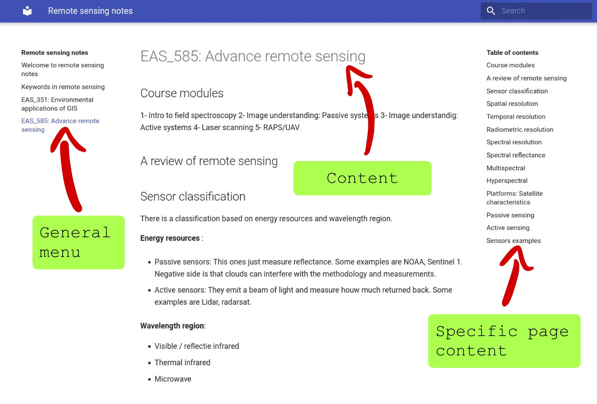
As they state in their site:
MkDocs is a fast, simple and downright gorgeous static site generator that’s geared towards building project documentation. Documentation source files are written in Markdown, and configured with a single YAML configuration file.
Now, they state that source files are written in Markdown, but if I’m an R user, probably I’m used to Rmarkdown files. Plus it’s nice to create documents in Rmarkdown where I can mix markdown and R code (R + markdown).
So, how can I set up everything?
For this recipe, you will need:
- R and RStudio
- Rmarkdown package
- MkDocs
- git
- GitHub account
I’m not going to describe how to install R RStudio, Rmarkdown or git. There are plenty good tutorials and documentation on how to do it out there. I’m going to describe the process from the installation of MkDocs.
Getting MkDocs
For this, I followed the instructions over here. I got already python on my machine and I’m a Linux user, so I’m using Ubuntu 20.04
Given that I had already python I just installed MkDocs:
pip install mkdocsThen I validated that the installation was succesful:
$ mkdocs --version
mkdocs, version 1.2.2 from /home/your_username/.local/lib/python3.8/site-packages/mkdocs (Python 3.8)Done! I got MkDocs on my computer.
Getting Matherial theme
I don’t like the default theme that comes with MkDocs, so I changed to Matherial.
To install this theme, you will need to run in the terminal:
$ pip3 install mkdocs-materialConfiguring your GitHub repository
You will need to have an account already on GitHub. When you are done with this step, you can go and create a repository. Also you will need to go to settings, search for Pages on the left hand side menu and there select the main branch to enable GitHub Pages for your repository.
The steps are the following:
Create a new repository
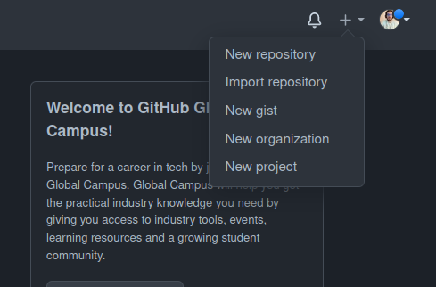
Options for the new repo
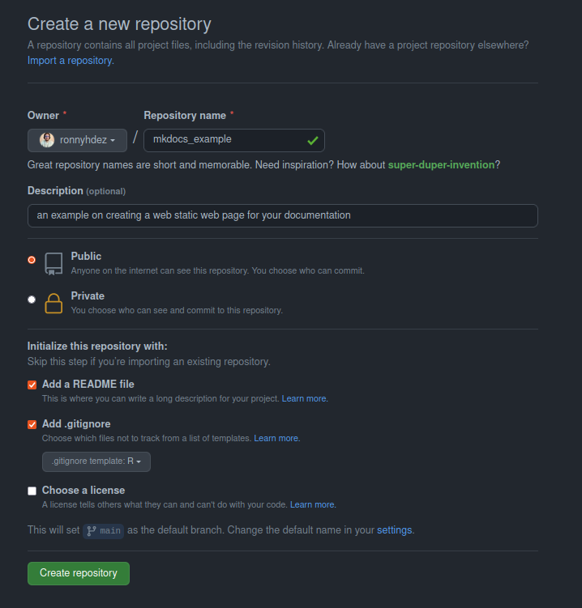
Settings to enable GitHub pages
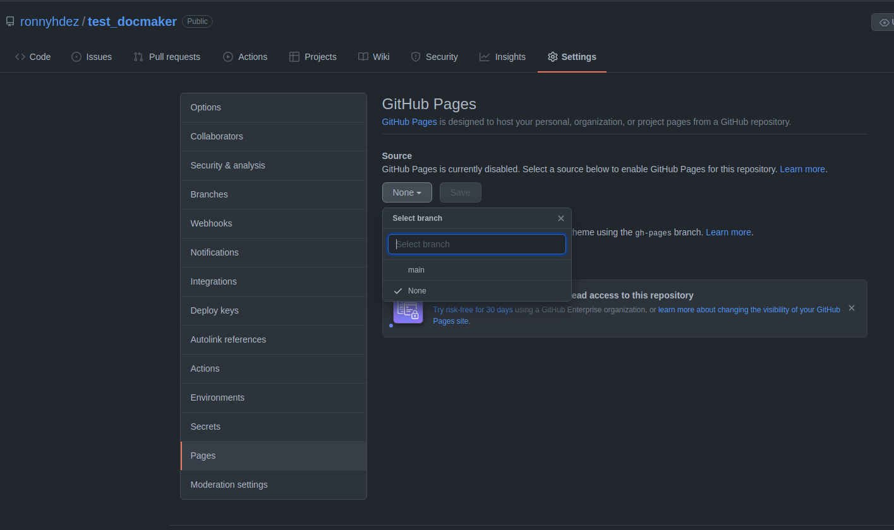
Cloning your project
If you are already familiar with this step, skip this section and go ahead to the next session. If you are starting with git and GitHub here is the set of steps to clone your repo and start working.
Up to this point we just have created the repository on GitHub and tweak some settings. It’s time to clone the repository created on GitHub to our computer. We will be working with the RStudio IDE.
Create new project
Select the
Version Controloption 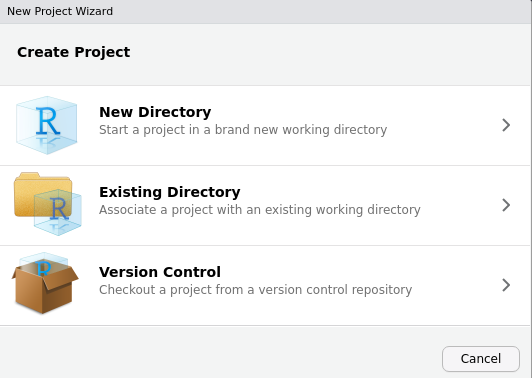Then select the
Gitoption 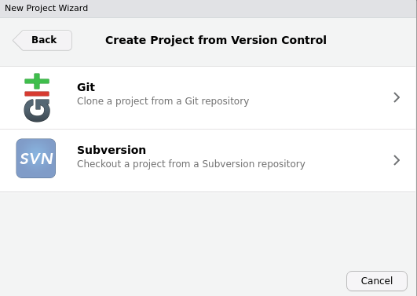Now, go to your repository on GitHub and under the
Codebutton copy the url. Make sure that theHTTPSoption is highlighted. 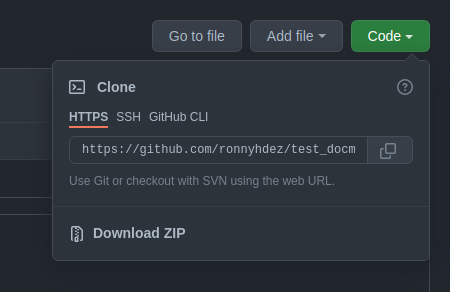Copy the URL in the
Repository URLsection. TheProject directory nameshould auto-populate. Then select your path where you want to locate your repository folder. 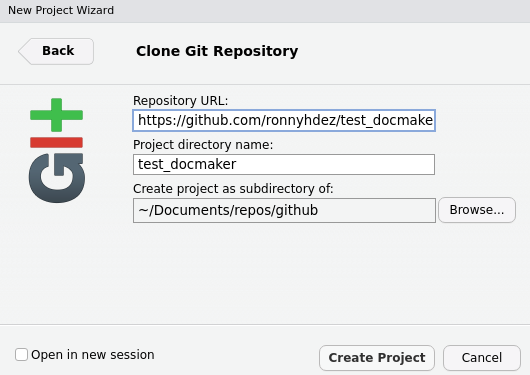Now, RStudio should open a new session for working on your repository!
Working on your notes
Now we are all set. We can start creating our Rmarkdown documents:
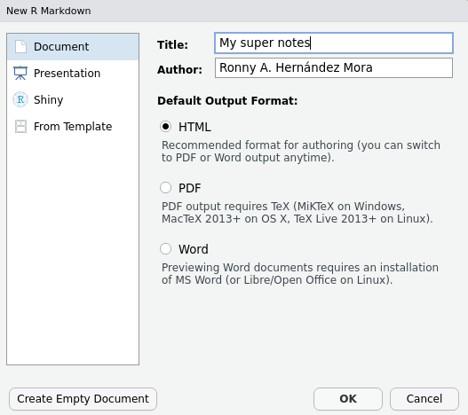
Create as many Rmd documents as you need. Each document will be a “section” on your final website.
Each of the titles and subtitles in your document will be sections inside the specific page.
Also, use relative paths. This will make everything less error prone.
Now, because we are going to use the package docmaker we need to follow a structure:
- All your
Rmdfiles should be in the root of your project. - Your data, images, pdfs files can be saved inside folders.
- Don’t use
docsfolder. This is a special folder designated to save the files needed to build the web page.docmakerpackage will be in charge of the use of this folder, so you don’t have to worry about it.
Your files in your repository should look something like this:
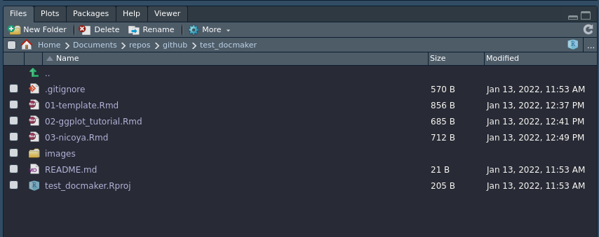
.gitignore advice
In order to not make your control version slow or run out of space in your GitHub account, ignore some files writing them in your .gitignore file.
Just open that file in RStudio and add the following lines to not include images, data, credentials or other files that are not necessary for control versioning:
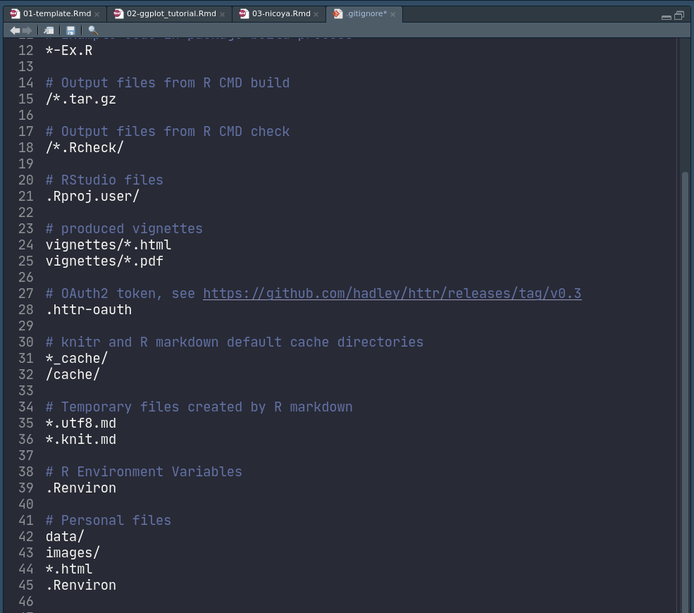
In there I added:
# Personal files
data/
images/
*.html
.RenvironSending your changes to your github repository.
For this example I’m not using branches to avoid focusing on the git details, so we are just going to send everything to the main branch. This step is
git add .
git commit -m "Add first notes"
git pushBe aware that this is probably going to ask you for who you are (user name on GitHub and email) and your credentials. One tip to save your credentials for the specific repository that you are working on is the following command after you enter your credentials:
git config credential.helper storeDeploy and publish your notes with docmaker
So far, we have our notes. But we are still lacking the part of publishing in our web page the notes. There are several steps to do this manually but after many times repeating everything I decided to create a small R package to automatize this steps. This package is called dockmaer
You can install the package with:
devtools::install_github("ronnyhdez/docmaker")Now, on your console you can load the package:
library(docmaker)Configure repo with docmaker
Before building and deploying our notes, we need to do some configuration steps in our repository. docmaker can take care of this with the function:
build_repo(github_page_url = "https://ronnyhdez.github.io/test_docmaker/",
site_author = "Ronny A. Hernández Mora")We can get the URL of our repository in the settings > page on GitHub. After we enabled this in a step before, there should appear the URL designated by GitHub for our web site.
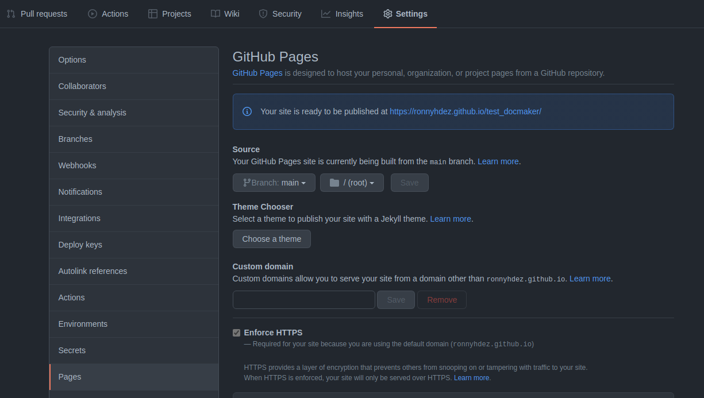
The site_author should be our name.
This function will do the following:
- Create a
ymlfile - Add to the
.gitignorethesitefolder - Create a
docsfolder
Build and deploy notes
Because this is our first time, all of our notes (three in the example) are not existing as md documents nor even built or deploy with mkdocs.
docmaker have a function to take all the .Rmd files existing in our project root and do all the steps needed to deploy this ones:
make_all_docs(deploy = TRUE)This function will do the following:
- Render all our
Rmdfiles tomd - Move the outputs (including images) to the
docsfolder - If we are using a
README.Rmdfile this will be ignore - Build the mkdocs
- If
deployis set toTRUEit will deploy the notes. - Create an specifi branch for the pages deployment:
gh-deploy
Now, given that we are using a new branch to be deployed, we need to go back to GitHub pages and make a small change: change the branch selected to be build from:
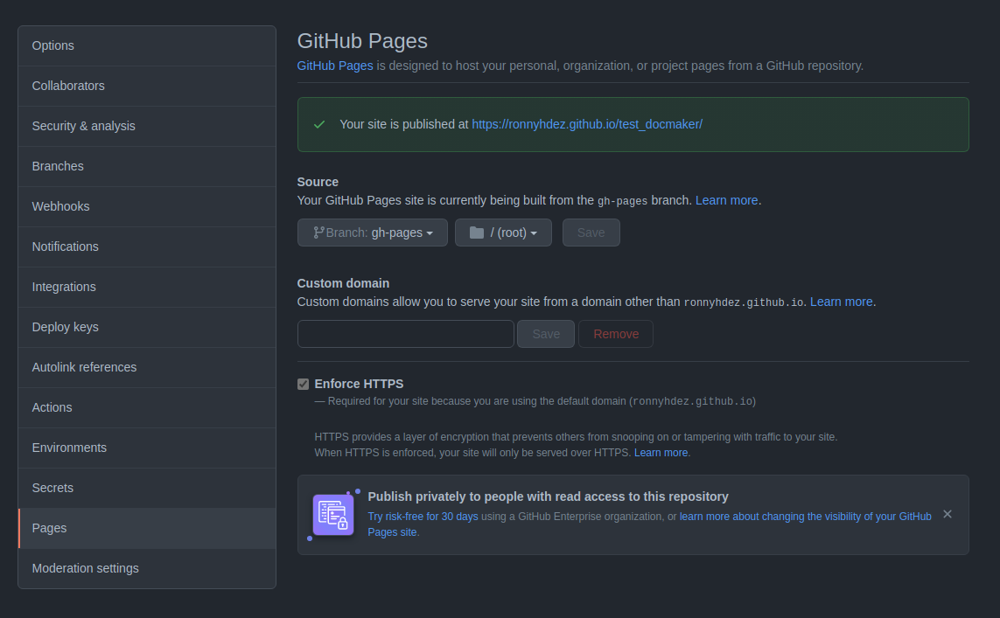
After some seconds (or a few minutes), we should be able to see our site alive!
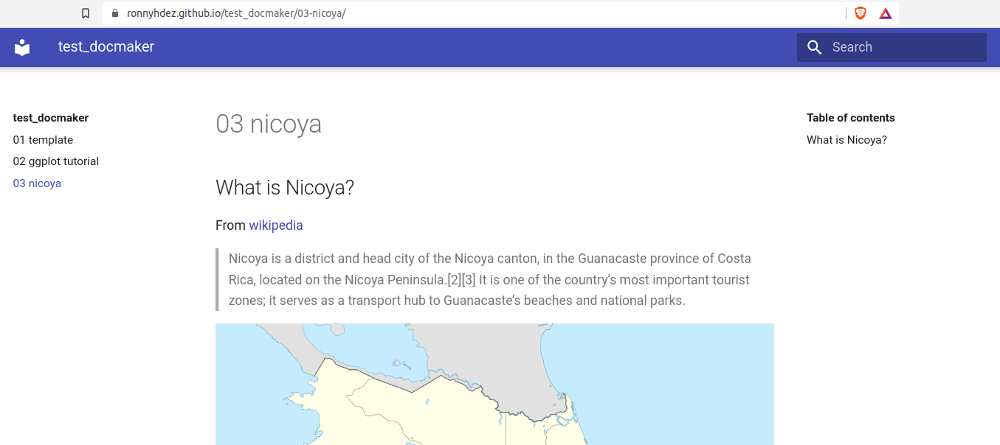
As we can see, our 3 files are sections in the left side menu. The titles and subtitles of each document will be shown in the Table of contents in the right side menu.
Code and example site
All the code and configuration files of the example site are in this GitHub repository:
Reuse
Citation
BibTeX citation:
@online{a.hernandezmora2022,
author = {Ronny A. Hernandez Mora},
title = {Creating a Website Using Mkdocs, {Rmarkdown} and {GitHub}
Pages},
date = {2022-01-13},
url = {https://ronnyale.com//posts/2021-12-11-usingmkdocsrmd},
langid = {en}
}
For attribution, please cite this work as:
Ronny A. Hernandez Mora. 2022. “Creating a Website Using Mkdocs,
Rmarkdown and GitHub Pages.” January 13, 2022. https://ronnyale.com//posts/2021-12-11-usingmkdocsrmd.